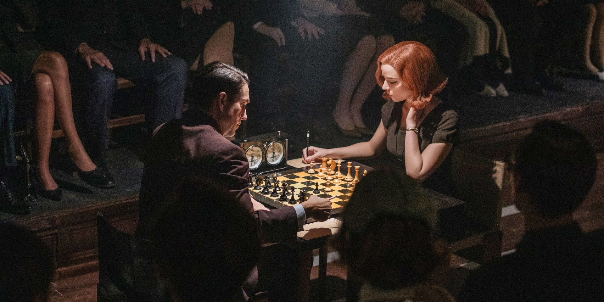
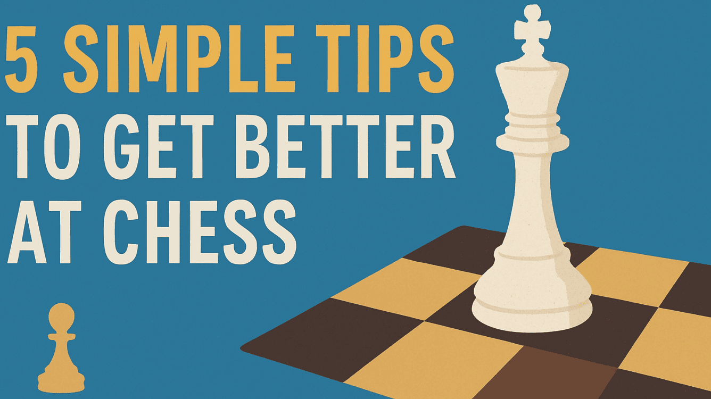
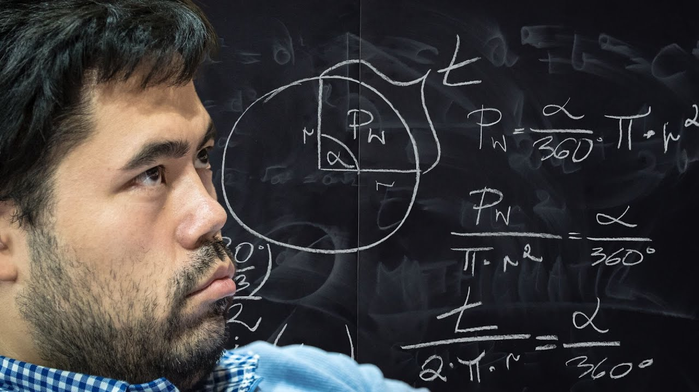

Schach



Was ist Schach?
- Schach (Schach König übersetzt) ist eine strategsiches Brettspiel.
- Zwei Spieler bewegen abwechselnd Figuren auf dem Brett.
- Das Ziel ist es den gegnerischen König so anzugreifen, dass
der Opponent keinen Zug hat den Angriff zu verteidigen.

Wie wird man gut in Schach?
- Im Schach gibt es Punkte namens ELO.
- Je mehr Punkte, desto besser ist man bzw. fordert bessere Spieler heraus.
- Das absolute kleinste ELO beträgt 100ELO, das höchste ELO ist ~3.300+
- Spielen Sie mehr Schach
- Lesen Sie Schach-Bücher bzw. konsumieren Sie Schach-Theorie
- Analysieren Sie ihre Spiele

- ⬆️Konzentration
- ⬆️Problemlösungsfähigkeiten
- ⬆️Gedächtnis
Vorteile von Schach

- Großer Zeitaufwand⌛⌛
- Hohe Komplexität 🎓️💡
- Gedult und Frustration 🧊🌡️